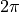

Usage¶
Here you can find the source code of the main PythTB module.
The main PythTB module consists of these three parts:
pythtb.tb_modelmain tight-binding model class.pythtb.wf_arrayclass for computing Berry phase (and related) properties.pythtb.w90class for interface with Wannier90 code that allows construction of tight-binding models based on first-principles density functional theory calculations.
- class pythtb.tb_model(dim_k, dim_r, lat=None, orb=None, per=None, nspin=1)[source]¶
This is the main class of the PythTB package which contains all information for the tight-binding model.
- Parameters:
dim_k – Dimensionality of reciprocal space, i.e., specifies how many directions are considered to be periodic.
dim_r – Dimensionality of real space, i.e., specifies how many real space lattice vectors there are and how many coordinates are needed to specify the orbital coordinates.
Note
Parameter dim_r can be larger than dim_k! For example, a polymer is a three-dimensional molecule (one needs three coordinates to specify orbital positions), but it is periodic along only one direction. For a polymer, therefore, we should have dim_k equal to 1 and dim_r equal to 3. See similar example here: Trestle.
- Parameters:
lat – Array containing lattice vectors in Cartesian coordinates (in arbitrary units). In example the below, the first lattice vector has coordinates [1.0,0.5] while the second one has coordinates [0.0,2.0]. By default, lattice vectors are an identity matrix.
orb – Array containing reduced coordinates of all tight-binding orbitals. In the example below, the first orbital is defined with reduced coordinates [0.2,0.3]. Its Cartesian coordinates are therefore 0.2 times the first lattice vector plus 0.3 times the second lattice vector. If orb is an integer code will assume that there are these many orbitals all at the origin of the unit cell. By default the code will assume a single orbital at the origin.
per – This is an optional parameter giving a list of lattice vectors which are considered to be periodic. In the example below, only the vector [0.0,2.0] is considered to be periodic (since per=[1]). By default, all lattice vectors are assumed to be periodic. If dim_k is smaller than dim_r, then by default the first dim_k vectors are considered to be periodic.
nspin – Number of explicit spin components assumed for each orbital in orb. Allowed values of nspin are 1 and 2. If nspin is 1 then the model is spinless, if nspin is 2 then it is explicitly a spinfull model and each orbital is assumed to have two spin components. Default value of this parameter is 1. Of course one can make spinfull calculation even with nspin set to 1, but then the user must keep track of which orbital corresponds to which spin component.
Example usage:
# Creates model that is two-dimensional in real space but only # one-dimensional in reciprocal space. Second lattice vector is # chosen to be periodic (since per=[1]). Three orbital # coordinates are specified. tb = tb_model(1, 2, lat=[[1.0, 0.5], [0.0, 2.0]], orb=[[0.2, 0.3], [0.1, 0.1], [0.2, 0.2]], per=[1])
- set_onsite(onsite_en, ind_i=None, mode='set')[source]¶
Defines on-site energies for tight-binding orbitals. One can either set energy for one tight-binding orbital, or all at once.
- Parameters:
onsite_en – Either a list of on-site energies (in arbitrary units) for each orbital, or a single on-site energy (in this case ind_i parameter must be given). In the case when nspin is 1 (spinless) then each on-site energy is a single number. If nspin is 2 then on-site energy can be given either as a single number, or as an array of four numbers, or 2x2 matrix. If a single number is given, it is interpreted as on-site energy for both up and down spin component. If an array of four numbers is given, these are the coefficients of I, sigma_x, sigma_y, and sigma_z (that is, the 2x2 identity and the three Pauli spin matrices) respectively. Finally, full 2x2 matrix can be given as well. If this function is never called, on-site energy is assumed to be zero.
ind_i – Index of tight-binding orbital whose on-site energy you wish to change. This parameter should be specified only when onsite_en is a single number (not a list).
mode –
Similar to parameter mode in function set_hop*. Speficies way in which parameter onsite_en is used. It can either set value of on-site energy from scratch, reset it, or add to it.
”set” – Default value. On-site energy is set to value of onsite_en parameter. One can use “set” on each tight-binding orbital only once.
”reset” – Specifies on-site energy to given value. This function can be called multiple times for the same orbital(s).
”add” – Adds to the previous value of on-site energy. This function can be called multiple times for the same orbital(s).
Example usage:
# Defines on-site energy of first orbital to be 0.0, # second 1.0, and third 2.0 tb.set_onsite([0.0, 1.0, 2.0]) # Increases value of on-site energy for second orbital tb.set_onsite(100.0, 1, mode="add") # Changes on-site energy of second orbital to zero tb.set_onsite(0.0, 1, mode="reset") # Sets all three on-site energies at once tb.set_onsite([2.0, 3.0, 4.0], mode="reset")
- set_hop(hop_amp, ind_i, ind_j, ind_R=None, mode='set', allow_conjugate_pair=False)[source]¶
Defines hopping parameters between tight-binding orbitals. In the notation used in section 3.1 equation 3.6 of
notes on tight-binding formalismthis function specifies the following objectWhere is i-th tight-binding orbital in the home unit cell and is j-th tight-binding orbital in unit cell shifted by lattice vector .
 is the Hamiltonian.
is the Hamiltonian.(Strictly speaking, this term specifies hopping amplitude for hopping from site j+R to site i, not vice-versa.)
Hopping in the opposite direction is automatically included by the code since
Warning
There is no need to specify hoppings in both direction and opposite direction since that is done automatically. If you want to specifiy hoppings in both directions, see description of parameter allow_conjugate_pair.
- Parameters:
hop_amp – Hopping amplitude; can be real or complex number, equals . If nspin is 2 then hopping amplitude can be given either as a single number, or as an array of four numbers, or as 2x2 matrix. If a single number is given, it is interpreted as hopping amplitude for both up and down spin component. If an array of four numbers is given, these are the coefficients of I, sigma_x, sigma_y, and sigma_z (that is, the 2x2 identity and the three Pauli spin matrices) respectively. Finally, full 2x2 matrix can be given as well.
ind_i – Index of bra orbital from the bracket . This orbital is assumed to be in the home unit cell.
ind_j – Index of ket orbital from the bracket . This orbital does not have to be in the home unit cell; its unit cell position is determined by parameter ind_R.
ind_R – Lattice vector (integer array, in reduced coordinates) pointing to the unit cell where the ket orbital is located. The number of coordinates must equal the dimensionality in real space (dim_r parameter) for consistency, but only the periodic directions of ind_R are used. If reciprocal space is zero-dimensional (as in a molecule), this parameter does not need to be specified.
mode –
Similar to parameter mode in function set_onsite. Speficies way in which parameter hop_amp is used. It can either set value of hopping term from scratch, reset it, or add to it.
”set” – Default value. Hopping term is set to value of hop_amp parameter. One can use “set” for each triplet of ind_i, ind_j, ind_R only once.
”reset” – Specifies on-site energy to given value. This function can be called multiple times for the same triplet ind_i, ind_j, ind_R.
”add” – Adds to the previous value of hopping term This function can be called multiple times for the same triplet ind_i, ind_j, ind_R.
If set_hop was ever called with allow_conjugate_pair set to True, then it is possible that user has specified both
 and conjugate pair . In this case, “set”, “reset”, and “add”
parameters will treat triplet ind_i, ind_j, ind_R and
conjugate triplet ind_j, ind_i, -ind_R as distinct.
and conjugate pair . In this case, “set”, “reset”, and “add”
parameters will treat triplet ind_i, ind_j, ind_R and
conjugate triplet ind_j, ind_i, -ind_R as distinct.allow_conjugate_pair – Default value is False. If set to True code will allow user to specify hopping
even if conjugate-pair hopping
 has been
specified. If both terms are specified, code will
still count each term two times.
has been
specified. If both terms are specified, code will
still count each term two times.
Example usage:
# Specifies complex hopping amplitude between first orbital in home # unit cell and third orbital in neigbouring unit cell. tb.set_hop(0.3+0.4j, 0, 2, [0, 1]) # change value of this hopping tb.set_hop(0.1+0.2j, 0, 2, [0, 1], mode="reset") # add to previous value (after this function call below, # hopping term amplitude is 100.1+0.2j) tb.set_hop(100.0, 0, 2, [0, 1], mode="add")
- display()[source]¶
Prints on the screen some information about this tight-binding model. This function doesn’t take any parameters.
- visualize(dir_first, dir_second=None, eig_dr=None, draw_hoppings=True, ph_color='black')[source]¶
Rudimentary function for visualizing tight-binding model geometry, hopping between tight-binding orbitals, and electron eigenstates.
If eigenvector is not drawn, then orbitals in home cell are drawn as red circles, and those in neighboring cells are drawn with different shade of red. Hopping term directions are drawn with green lines connecting two orbitals. Origin of unit cell is indicated with blue dot, while real space unit vectors are drawn with blue lines.
If eigenvector is drawn, then electron eigenstate on each orbital is drawn with a circle whose size is proportional to wavefunction amplitude while its color depends on the phase. There are various coloring schemes for the phase factor; see more details under ph_color parameter. If eigenvector is drawn and coloring scheme is “red-blue” or “wheel”, all other elements of the picture are drawn in gray or black.
- Parameters:
dir_first – First index of Cartesian coordinates used for plotting.
dir_second – Second index of Cartesian coordinates used for plotting. For example if dir_first=0 and dir_second=2, and Cartesian coordinates of some orbital is [2.0,4.0,6.0] then it will be drawn at coordinate [2.0,6.0]. If dimensionality of real space (dim_r) is zero or one then dir_second should not be specified.
eig_dr – Optional parameter specifying eigenstate to plot. If specified, this should be one-dimensional array of complex numbers specifying wavefunction at each orbital in the tight-binding basis. If not specified, eigenstate is not drawn.
draw_hoppings – Optional parameter specifying whether to draw all allowed hopping terms in the tight-binding model. Default value is True.
ph_color –
Optional parameter determining the way eigenvector phase factors are translated into color. Default value is “black”. Convention of the wavefunction phase is as in convention 1 in section 3.1 of
notes on tight-binding formalism. In other words, these wavefunction phases are in correspondence with cell-periodic functions not .”black” – phase of eigenvectors are ignored and wavefunction is always colored in black.
”red-blue” – zero phase is drawn red, while phases or pi or -pi are drawn blue. Phases in between are interpolated between red and blue. Some phase information is lost in this coloring becase phase of +phi and -phi have same color.
”wheel” – each phase is given unique color. In steps of pi/3 starting from 0, colors are assigned (in increasing hue) as: red, yellow, green, cyan, blue, magenta, red.
- Returns:
fig – Figure object from matplotlib.pyplot module that can be used to save the figure in PDF, EPS or similar format, for example using fig.savefig(“name.pdf”) command.
ax – Axes object from matplotlib.pyplot module that can be used to tweak the plot, for example by adding a plot title ax.set_title(“Title goes here”).
Example usage:
# Draws x-y projection of tight-binding model # tweaks figure and saves it as a PDF. (fig, ax) = tb.visualize(0, 1) ax.set_title("Title goes here") fig.savefig("model.pdf")
See also these examples: Edge states, Visualization example.
- solve_all(k_list=None, eig_vectors=False)[source]¶
Solves for eigenvalues and (optionally) eigenvectors of the tight-binding model on a given one-dimensional list of k-vectors.
Note
Eigenvectors (wavefunctions) returned by this function and used throughout the code are exclusively given in convention 1 as described in section 3.1 of
notes on tight-binding formalism. In other words, they are in correspondence with cell-periodic functions not .Note
In some cases class
pythtb.wf_arrayprovides a more elegant way to deal with eigensolutions on a regular mesh of k-vectors.- Parameters:
k_list – One-dimensional array of k-vectors. Each k-vector is given in reduced coordinates of the reciprocal space unit cell. For example, for real space unit cell vectors [1.0,0.0] and [0.0,2.0] and associated reciprocal space unit vectors [2.0*pi,0.0] and [0.0,pi], k-vector with reduced coordinates [0.25,0.25] corresponds to k-vector [0.5*pi,0.25*pi]. Dimensionality of each vector must equal to the number of periodic directions (i.e. dimensionality of reciprocal space, dim_k). This parameter shouldn’t be specified for system with zero-dimensional k-space (dim_k =0).
eig_vectors – Optional boolean parameter, specifying whether eigenvectors should be returned. If eig_vectors is True, then both eigenvalues and eigenvectors are returned, otherwise only eigenvalues are returned.
- Returns:
eval – Two dimensional array of eigenvalues for all bands for all kpoints. Format is eval[band,kpoint] where first index (band) corresponds to the electron band in question and second index (kpoint) corresponds to the k-point as listed in the input parameter k_list. Eigenvalues are sorted from smallest to largest at each k-point seperately.
In the case when reciprocal space is zero-dimensional (as in a molecule) kpoint index is dropped and eval is of the format eval[band].
evec – Three dimensional array of eigenvectors for all bands and all kpoints. If nspin equals 1 the format of evec is evec[band,kpoint,orbital] where “band” is the electron band in question, “kpoint” is index of k-vector as given in input parameter k_list. Finally, “orbital” refers to the tight-binding orbital basis function. Ordering of bands is the same as in eval.
Eigenvectors evec[n,k,j] correspond to from section 3.1 equation 3.5 and 3.7 of the
notes on tight-binding formalism.In the case when reciprocal space is zero-dimensional (as in a molecule) kpoint index is dropped and evec is of the format evec[band,orbital].
In the spinfull calculation (nspin equals 2) evec has additional component evec[…,spin] corresponding to the spin component of the wavefunction.
Example usage:
# Returns eigenvalues for three k-vectors eval = tb.solve_all([[0.0, 0.0], [0.0, 0.2], [0.0, 0.5]]) # Returns eigenvalues and eigenvectors for two k-vectors (eval, evec) = tb.solve_all([[0.0, 0.0], [0.0, 0.2]], eig_vectors=True)
- solve_one(k_point=None, eig_vectors=False)[source]¶
Similar to
pythtb.tb_model.solve_all()but solves tight-binding model for only one k-vector.
- cut_piece(num, fin_dir, glue_edgs=False)[source]¶
Constructs a (d-1)-dimensional tight-binding model out of a d-dimensional one by repeating the unit cell a given number of times along one of the periodic lattice vectors. The real-space lattice vectors of the returned model are the same as those of the original model; only the dimensionality of reciprocal space is reduced.
- Parameters:
num – How many times to repeat the unit cell.
fin_dir – Index of the real space lattice vector along which you no longer wish to maintain periodicity.
glue_edgs – Optional boolean parameter specifying whether to allow hoppings from one edge to the other of a cut model.
- Returns:
fin_model – Object of type
pythtb.tb_modelrepresenting a cutout tight-binding model. Orbitals in fin_model are numbered so that the i-th orbital of the n-th unit cell has index i+norb*n (here norb is the number of orbitals in the original model).
Example usage:
A = tb_model(3, 3, ...) # Construct two-dimensional model B out of three-dimensional # model A by repeating model along second lattice vector ten times B = A.cut_piece(10, 1) # Further cut two-dimensional model B into one-dimensional model # A by repeating unit cell twenty times along third lattice # vector and allow hoppings from one edge to the other C = B.cut_piece(20, 2, glue_edgs=True)
See also these examples: Finite Haldane model, Edge states.
- reduce_dim(remove_k, value_k)[source]¶
Reduces dimensionality of the model by taking a reciprocal-space slice of the Bloch Hamiltonian . The Bloch Hamiltonian (defined in
notes on tight-binding formalismin section 3.1 equation 3.7) of a d-dimensional model is a function of d-dimensional k-vector.This function returns a d-1 dimensional tight-binding model obtained by constraining one of k-vector components in
 to be a constant.
to be a constant.- Parameters:
remove_k – Which reciprocal space unit vector component you wish to keep constant.
value_k – Value of the k-vector component to which you are constraining this model. Must be given in reduced coordinates.
- Returns:
red_tb – Object of type
pythtb.tb_modelrepresenting a reduced tight-binding model.
Example usage:
# Constrains second k-vector component to equal 0.3 red_tb = tb.reduce_dim(1, 0.3)
- change_nonperiodic_vector(np_dir, new_latt_vec=None, to_home=True, to_home_suppress_warning=False)[source]¶
Returns tight-binding model
pythtb.tb_modelin which one of the nonperiodic “lattice vectors” is changed. Nonperiodic vectors are those elements of lat that are not listed as periodic with the per parameter. (See more information on lat and per inpythtb.tb_model). The returned object also has modified reduced coordinates of orbitals, consistent with the new choice of lat. Therefore, the actual (Cartesian) coordinates of orbitals in original and returned tb_model are the same.This function is especially useful after using cut_piece to create slabs, rods, or ribbons.
By default, the new nonperiodic vector is constructed from the original by removing all components in the periodic space. This ensures that the Berry phases computed in the periodic space correspond to the usual expectations. For example, after this change, the Berry phase computed for a ribbon depends only on the location of the Wannier center in the extended direction, not on its location in the transverse direction. Alternatively, the new nonperiodic vector can be set explicitly via the new_latt_vec parameter.
See example BN ribbon with change of nonperiodic vector for more detail.
- Parameters:
np_dir – Integer specifying which nonperiodic lattice vector to change.
new_latt_vec – Optional parameter. If None (default), the new nonperiodic lattice vector is the same as the original one except that all components in the periodic space have been projected out (so that the new nonperiodic vector is perpendicular to all periodic vectors). Otherwise, array of integers with size dim_r defining the desired new nonperiodic lattice vector.
to_home – Optional parameter. If True (default), will shift all orbitals to the home cell along non-periodic directions.
to_home_suppress_warning – Optional parameter, if False code will print a warning message whenever returned object has an orbital with at least one reduced coordinate smaller than 0 or larger than 1 along a non-periodic direction. If True the warning message will not be printed. Note that this parameter has no effect on the model; it only determines whether a warning message is printed or not. Default value is False.
- Returns:
nnp_tb – Object of type
pythtb.tb_modelrepresenting an equivalent tight-binding model with one redefined nonperiodic lattice vector.
Example usage:
# Modify slab model so that nonperiodic third vector is perpendicular to the slab nnp_tb = tb.change_nonperiodic_vector(2)
- make_supercell(sc_red_lat, return_sc_vectors=False, to_home=True, to_home_suppress_warning=False)[source]¶
Returns tight-binding model
pythtb.tb_modelrepresenting a super-cell of a current object. This function can be used together with cut_piece in order to create slabs with arbitrary surfaces.By default all orbitals will be shifted to the home cell after unit cell has been created. That way all orbitals will have reduced coordinates between 0 and 1. If you wish to avoid this behavior, you need to set, to_home argument to False.
- Parameters:
sc_red_lat – Array of integers with size dim_r*dim_r defining a super-cell lattice vectors in terms of reduced coordinates of the original tight-binding model. First index in the array specifies super-cell vector, while second index specifies coordinate of that super-cell vector. If dim_k<dim_r then still need to specify full array with size dim_r*dim_r for consistency, but non-periodic directions must have 0 on off-diagonal elemets s and 1 on diagonal.
return_sc_vectors – Optional parameter. Default value is False. If True returns also lattice vectors inside the super-cell. Internally, super-cell tight-binding model will have orbitals repeated in the same order in which these super-cell vectors are given, but if argument to_home is set True (which it is by default) then additionally, orbitals will be shifted to the home cell.
to_home – Optional parameter, if True will shift all orbitals to the home cell along non-periodic directions. Default value is True.
to_home_suppress_warning – Optional parameter, if False code will print a warning message whenever returned object has an orbital with at least one reduced coordinate smaller than 0 or larger than 1 along a non-periodic direction. If True the warning message will not be printed. Note that setting this parameter to True or False has no effect on resulting coordinates of the model. The only difference between this parameter set to True or False is whether a warning message is printed or not. Default value is False.
- Returns:
sc_tb – Object of type
pythtb.tb_modelrepresenting a tight-binding model in a super-cell.sc_vectors – Super-cell vectors, returned only if return_sc_vectors is set to True (default value is False).
Example usage:
# Creates super-cell out of 2d tight-binding model tb sc_tb = tb.make_supercell([[2, 1], [-1, 2]])
- remove_orb(to_remove)[source]¶
Returns a model with some orbitals removed. Note that this will reindex the orbitals with indices higher than those that are removed. For example. If model has 6 orbitals and one wants to remove 2nd orbital, then returned model will have 5 orbitals indexed as 0,1,2,3,4. In the returned model orbital indexed as 2 corresponds to the one indexed as 3 in the original model. Similarly 3 and 4 correspond to 4 and 5. Indices of first two orbitals (0 and 1) are unaffected.
- Parameters:
to_remove – List of orbital indices to be removed, or index of single orbital to be removed
- Returns:
del_tb – Object of type
pythtb.tb_modelrepresenting a model with removed orbitals.
Example usage:
# if original_model has say 10 orbitals then # returned small_model will have only 8 orbitals. small_model=original_model.remove_orb([2,5])
- k_uniform_mesh(mesh_size)[source]¶
Returns a uniform grid of k-points that can be passed to passed to function
pythtb.tb_model.solve_all(). This function is useful for plotting density of states histogram and similar.Returned uniform grid of k-points always contains the origin.
- Parameters:
mesh_size – Number of k-points in the mesh in each periodic direction of the model.
- Returns:
k_vec – Array of k-vectors on the mesh that can be directly passed to function
pythtb.tb_model.solve_all().
Example usage:
# returns a 10x20x30 mesh of a tight binding model # with three periodic directions k_vec = my_model.k_uniform_mesh([10,20,30]) # solve model on the uniform mesh my_model.solve_all(k_vec)
- k_path(kpts, nk, report=True)[source]¶
Interpolates a path in reciprocal space between specified k-points. In 2D or 3D the k-path can consist of several straight segments connecting high-symmetry points (“nodes”), and the results can be used to plot the bands along this path.
The interpolated path that is returned contains as equidistant k-points as possible.
- Parameters:
kpts –
Array of k-vectors in reciprocal space between which interpolated path should be constructed. These k-vectors must be given in reduced coordinates. As a special case, in 1D k-space kpts may be a string:
”full” – Implies [ 0.0, 0.5, 1.0] (full BZ)
”fullc” – Implies [-0.5, 0.0, 0.5] (full BZ, centered)
”half” – Implies [ 0.0, 0.5] (half BZ)
nk – Total number of k-points to be used in making the plot.
report – Optional parameter specifying whether printout is desired (default is True).
- Returns:
k_vec – Array of (nearly) equidistant interpolated k-points. The distance between the points is calculated in the Cartesian frame, however coordinates themselves are given in dimensionless reduced coordinates! This is done so that this array can be directly passed to function
pythtb.tb_model.solve_all().k_dist – Array giving accumulated k-distance to each k-point in the path. Unlike array k_vec this one has dimensions! (Units are defined here so that for an one-dimensional crystal with lattice constant equal to for example 10 the length of the Brillouin zone would equal 1/10=0.1. In other words factors of  are absorbed into k.) This array can be used to plot path in the k-space so that the distances between the k-points in the plot are exact.
k_node – Array giving accumulated k-distance to each node on the path in Cartesian coordinates. This array is typically used to plot nodes (typically special points) on the path in k-space.
Example usage:
# Construct a path connecting four nodal points in k-space # Path will contain 401 k-points, roughly equally spaced path = [[0.0, 0.0], [0.0, 0.5], [0.5, 0.5], [0.0, 0.0]] (k_vec,k_dist,k_node) = my_model.k_path(path,401) # solve for eigenvalues on that path evals = tb.solve_all(k_vec) # then use evals, k_dist, and k_node to plot bandstructure # (see examples)
- ignore_position_operator_offdiagonal()[source]¶
Call to this function enables one to approximately compute Berry-like objects from tight-binding models that were obtained from Wannier90.
- position_matrix(evec, dir)[source]¶
Returns matrix elements of the position operator along direction dir for eigenvectors evec at a single k-point. Position operator is defined in reduced coordinates.
The returned object
 is
isHere
 is the position operator along direction
is the position operator along direction
 that is selected by dir.
that is selected by dir.- Parameters:
evec – Eigenvectors for which we are computing matrix elements of the position operator. The shape of this array is evec[band,orbital] if nspin equals 1 and evec[band,orbital,spin] if nspin equals 2.
dir – Direction along which we are computing the center. This integer must not be one of the periodic directions since position operator matrix element in that case is not well defined.
- Returns:
pos_mat – Position operator matrix as defined above. This is a square matrix with size determined by number of bands given in evec input array. First index of pos_mat corresponds to bra vector (m) and second index to ket (n).
Example usage:
# diagonalizes Hamiltonian at some k-points (evals, evecs) = my_model.solve_all(k_vec,eig_vectors=True) # computes position operator matrix elements for 3-rd kpoint # and bottom five bands along first coordinate pos_mat = my_model.position_matrix(evecs[:5,2], 0)
See also this example: Hybrid Wannier centers in Haldane model,
- position_expectation(evec, dir)[source]¶
Returns diagonal matrix elements of the position operator. These elements can be interpreted as an average position of n-th Bloch state evec[n] along direction dir. Generally speaking these centers are not hybrid Wannier function centers (which are instead returned by
pythtb.tb_model.position_hwf()).See function
pythtb.tb_model.position_matrix()for definition of matrix.- Parameters:
evec – Eigenvectors for which we are computing matrix elements of the position operator. The shape of this array is evec[band,orbital] if nspin equals 1 and evec[band,orbital,spin] if nspin equals 2.
dir – Direction along which we are computing matrix elements. This integer must not be one of the periodic directions since position operator matrix element in that case is not well defined.
- Returns:
pos_exp – Diagonal elements of the position operator matrix
.
Length of this vector is determined by number of bands given in evec input
array.
Example usage:
# diagonalizes Hamiltonian at some k-points (evals, evecs) = my_model.solve_all(k_vec,eig_vectors=True) # computes average position for 3-rd kpoint # and bottom five bands along first coordinate pos_exp = my_model.position_expectation(evecs[:5,2], 0)
See also this example: Hybrid Wannier centers in Haldane model.
- position_hwf(evec, dir, hwf_evec=False, basis='orbital')[source]¶
Returns eigenvalues and optionally eigenvectors of the position operator matrix
in basis of the orbitals
or, optionally, of the input wave functions (typically Bloch
functions). The returned eigenvectors can be interpreted as
linear combinations of the input states evec that have
minimal extent (or spread  in the sense of
maximally localized Wannier functions) along direction
dir. The eigenvalues are average positions of these
localized states.
in the sense of
maximally localized Wannier functions) along direction
dir. The eigenvalues are average positions of these
localized states.Note that these eigenvectors are not maximally localized Wannier functions in the usual sense because they are localized only along one direction. They are also not the average positions of the Bloch states evec, which are instead computed by
pythtb.tb_model.position_expectation().See function
pythtb.tb_model.position_matrix()for the definition of the matrix.See also Fig. 3 in Phys. Rev. Lett. 102, 107603 (2009) for a discussion of the hybrid Wannier function centers in the context of a Chern insulator.
- Parameters:
evec – Eigenvectors for which we are computing matrix elements of the position operator. The shape of this array is evec[band,orbital] if nspin equals 1 and evec[band,orbital,spin] if nspin equals 2.
dir – Direction along which we are computing matrix elements. This integer must not be one of the periodic directions since position operator matrix element in that case is not well defined.
hwf_evec – Optional boolean variable. If set to True this function will return not only eigenvalues but also eigenvectors of
. Default value is False.basis – Optional parameter. If basis=”wavefunction”, the hybrid Wannier function hwf_evec is returned in the basis of the input wave functions. That is, the elements of hwf[i,j] give the amplitudes of the i-th hybrid Wannier function on the j-th input state. Note that option basis=”bloch” is a synonym for basis=”wavefunction”. If basis=”orbital”, the elements of hwf[i,orb] (or hwf[i,orb,spin] if nspin=2) give the amplitudes of the i-th hybrid Wannier function on the specified basis function. Default is basis=”orbital”.
- Returns:
hwfc – Eigenvalues of the position operator matrix
(also called hybrid Wannier function centers).
Length of this vector equals number of bands given in evec input
array. Hybrid Wannier function centers are ordered in ascending order.
Note that in general n-th hwfc does not correspond to n-th electronic
state evec.hwf – Eigenvectors of the position operator matrix
.
(also called hybrid Wannier functions). These are returned only if
parameter hwf_evec is set to True.
The shape of this array is [h,x] or [h,x,s] depending on value of basis
and nspin. If basis is “bloch” then x refers to indices of
Bloch states evec. If basis is “orbital” then x (or x and s)
correspond to orbital index (or orbital and spin index if nspin is 2).
Example usage:
# diagonalizes Hamiltonian at some k-points (evals, evecs) = my_model.solve_all(k_vec,eig_vectors=True) # computes hybrid Wannier centers (and functions) for 3-rd kpoint # and bottom five bands along first coordinate (hwfc, hwf) = my_model.position_hwf(evecs[:5,2], 0, hwf_evec=True, basis="orbital")
See also this example: Hybrid Wannier centers in Haldane model,
- class pythtb.wf_array(model, mesh_arr, nsta_arr=None)[source]¶
This class is used to store and manipulate an array of wavefunctions of a tight-binding model
pythtb.tb_modelon a regular or non-regular grid These are typically the Bloch energy eigenstates of the model, but this class can also be used to store a subset of Bloch bands, a set of hybrid Wannier functions for a ribbon or slab, or any other set of wavefunctions that are expressed in terms of the underlying basis orbitals. It provides methods that can be used to calculate Berry phases, Berry curvatures, 1st Chern numbers, etc.Regular k-space grid: If the grid is a regular k-mesh (no parametric dimensions), a single call to the function
pythtb.wf_array.solve_on_grid()will both construct a k-mesh that uniformly covers the Brillouin zone, and populate it with wavefunctions (eigenvectors) computed on this grid. The last point in each k-dimension is set so that it represents the same Bloch function as the first one (this involves the insertion of some orbital-position-dependent phase factors).Example Berry phases in Haldane model shows how to use wf_array on a regular grid of points in k-space. Examples Berry phase around Dirac cone in graphene and One-dimensional cycle of 1D tight-binding model show how to use non-regular grid of points.
Parametric or irregular k-space grid grid: An irregular grid of points, or a grid that includes also one or more parametric dimensions, can be populated manually with the help of the [] operator. For example, to copy eigenvectors evec into coordinate (2,3) in the wf_array object wf one can simply do:
wf[2,3]=evec
The wavefunctions (here the eigenvectors) evec above are expected to be in the format evec[state,orbital] (or evec[state,orbital,spin] for the spinfull calculation), where state typically runs over all bands. This is the same format as returned by
pythtb.tb_model.solve_one()orpythtb.tb_model.solve_all()(in the latter case one needs to restrict it to a single k-point as evec[:,kpt,:] if the model has dim_k>=1).If wf_array is used for closed paths, either in a reciprocal-space or parametric direction, then one needs to include both the starting and ending eigenfunctions even though they are physically equivalent. If the array dimension in question is a k-vector direction and the path traverses the Brillouin zone in a primitive reciprocal-lattice direction,
pythtb.wf_array.impose_pbc()can be used to associate the starting and ending points with each other; if it is a non-winding loop in k-space or a loop in parameter space, thenpythtb.wf_array.impose_loop()can be used instead. (These may not be necessary if only Berry fluxes are needed.)Example One-dimensional cycle of 1D tight-binding model shows how one of the directions of wf_array object need not be a k-vector direction, but can instead be a Hamiltonian parameter
 (see also discussion after equation 4.1 in
(see also discussion after equation 4.1 in notes on tight-binding formalism).The wavevectors stored in wf_array are typically Hamiltonian eigenstates (e.g., Bloch functions for k-space arrays), with the state index running over all bands. However, a wf_array object can also be used for other purposes, such as to store only a restricted set of Bloch states (e.g., just the occupied ones); a set of modified Bloch states (e.g., premultiplied by a position, velocity, or Hamiltonian operator); or for hybrid Wannier functions (i.e., eigenstates of a position operator in a nonperiodic direction). For an example of this kind, see Hybrid Wannier functions on a cubic slab.
- Parameters:
model – Object of type
pythtb.tb_modelrepresenting tight-binding model associated with this array of eigenvectors.mesh_arr – List of dimensions of the mesh of the wf_array, in order of reciprocal-space and/or parametric directions.
nsta_arr – Optional parameter specifying the number of states packed into the wf_array at each point on the mesh. Defaults to all states (i.e., norb*nspin).
Example usage:
# Construct wf_array capable of storing an 11x21 array of # wavefunctions wf = wf_array(tb, [11, 21]) # populate this wf_array with regular grid of points in # Brillouin zone wf.solve_on_grid([0.0, 0.0]) # Compute set of eigenvectors at one k-point (eval, evec) = tb.solve_one([kx, ky], eig_vectors = True) # Store it manually into a specified location in the array wf[3,4] = evec # To access the eigenvectors from the same position print(wf[3,4])
- solve_on_grid(start_k)[source]¶
Solve a tight-binding model on a regular mesh of k-points covering the entire reciprocal-space unit cell. Both points at the opposite sides of reciprocal-space unit cell are included in the array.
This function also automatically imposes periodic boundary conditions on the eigenfunctions. See also the discussion in
pythtb.wf_array.impose_pbc().- Parameters:
start_k – Origin of a regular grid of points in the reciprocal space.
- Returns:
- gaps – returns minimal direct bandgap between n-th and n+1-th
band on all the k-points in the mesh. Note that in the case of band crossings one may have to use very dense k-meshes to resolve the crossing.
Example usage:
# Solve eigenvectors on a regular grid anchored # at a given point wf.solve_on_grid([-0.5, -0.5])
- solve_on_one_point(kpt, mesh_indices)[source]¶
Solve a tight-binding model on a single k-point and store the eigenvectors in the wf_array object in the location specified by mesh_indices.
- Parameters:
kpt – List specifying desired k-point
mesh_indices – List specifying associated set of mesh indices
- Returns:
None
Example usage:
# Solve eigenvectors on a sphere of radius kappa surrounding # point k_0 in 3d k-space and pack into a predefined 2d wf_array for i in range[n+1]: for j in range[m+1]: theta=np.pi*i/n phi=2*np.pi*j/m kx=k_0[0]+kappa*np.sin(theta)*np.cos(phi) ky=k_0[1]+kappa*np.sin(theta)*np.sin(phi) kz=k_0[2]+kappa*np.cos(theta) wf.solve_on_one_point([kx,ky,kz],[i,j])
- choose_states(subset)[source]¶
Create a new wf_array object containing a subset of the states in the original one.
- Parameters:
subset – List of integers specifying states to keep
- Returns:
- wf_new – returns a wf_array that is identical in all
respects except that a subset of states have been kept.
Example usage:
# Make new *wf_array* object containing only two states wf_new=wf.choose_states([3,5])
- empty_like(nsta_arr=None)[source]¶
Create a new empty wf_array object based on the original, optionally modifying the number of states carried in the array.
- Parameters:
nsta_arr – Optional parameter specifying the number of states (or bands) to be carried in the array. Defaults to the same as the original wf_array object.
- Returns:
- wf_new – returns a similar wf_array except that array
elements are unitialized and the number of states may have changed.
Example usage:
# Make new empty wf_array object containing 6 bands per k-point wf_new=wf.empty_like(nsta_arr=6)
- impose_pbc(mesh_dir, k_dir)[source]¶
If the wf_array object was populated using the
pythtb.wf_array.solve_on_grid()method, this function should not be used since it will be called automatically by the code.The eigenfunctions are by convention chosen to obey a periodic gauge, i.e., not only up to a phase, but they are also equal in phase. It follows that the cell-periodic Bloch functions are related by . See
notes on tight-binding formalismsection 4.4 and equation 4.18 for more detail. This routine sets the cell-periodic Bloch function at the end of the string in direction according to this formula, overwriting the previous value.This function will impose these periodic boundary conditions along one direction of the array. We are assuming that the k-point mesh increases by exactly one reciprocal lattice vector along this direction. This is currently not checked by the code; it is the responsibility of the user. Currently wf_array does not store the k-vectors on which the model was solved; it only stores the eigenvectors (wavefunctions).
- Parameters:
mesh_dir – Direction of wf_array along which you wish to impose periodic boundary conditions.
k_dir – Corresponding to the periodic k-vector direction in the Brillouin zone of the underlying tb_model. Since version 1.7.0 this parameter is defined so that it is specified between 0 and dim_r-1.
See example One-dimensional cycle of 1D tight-binding model, where the periodic boundary condition is applied only along one direction of wf_array.
Example usage:
# Imposes periodic boundary conditions along the mesh_dir=0 # direction of the wf_array object, assuming that along that # direction the k_dir=1 component of the k-vector is increased # by one reciprocal lattice vector. This could happen, for # example, if the underlying tb_model is two dimensional but # wf_array is a one-dimensional path along k_y direction. wf.impose_pbc(mesh_dir=0,k_dir=1)
- impose_loop(mesh_dir)[source]¶
If the user knows that the first and last points along the mesh_dir direction correspond to the same Hamiltonian (this is not checked), then this routine can be used to set the eigenvectors equal (with equal phase), by replacing the last eigenvector with the first one (for each band, and for each other mesh direction, if any).
This routine should not be used if the first and last points are related by a reciprocal lattice vector; in that case,
pythtb.wf_array.impose_pbc()should be used instead.- Parameters:
mesh_dir – Direction of wf_array along which you wish to impose periodic boundary conditions.
Example usage:
# Suppose the wf_array object is three-dimensional # corresponding to (kx,ky,lambda) where (kx,ky) are # wavevectors of a 2D insulator and lambda is an # adiabatic parameter that goes around a closed loop. # Then to insure that the states at the ends of the lambda # path are equal (with equal phase) in preparation for # computing Berry phases in lambda for given (kx,ky), # do wf.impose_loop(mesh_dir=2)
- position_matrix(key, occ, dir)[source]¶
Similar to
pythtb.tb_model.position_matrix(). Only difference is that, in addition to specifying dir, one also has to specify key (k-point of interest) and occ (list of states to be included, which can optionally be ‘All’).
- position_expectation(key, occ, dir)[source]¶
Similar to
pythtb.tb_model.position_expectation(). Only difference is that, in addition to specifying dir, one also has to specify key (k-point of interest) and occ (list of states to be included, which can optionally be ‘All’).
- position_hwf(key, occ, dir, hwf_evec=False, basis='wavefunction')[source]¶
Similar to
pythtb.tb_model.position_hwf(), except that in addition to specifying dir, one also has to specify key, the k-point of interest, and occ, a list of states to be included (typically the occupied states).For backwards compatibility the default value of basis here is different from that in
pythtb.tb_model.position_hwf().
- berry_phase(occ='All', dir=None, contin=True, berry_evals=False)[source]¶
Computes the Berry phase along a given array direction and for a given set of states. These are typically the occupied Bloch states, in which case occ should range over all occupied bands. In this context, the occupied and unoccupied bands should be well separated in energy; it is the responsibility of the user to check that this is satisfied. If occ is not specified or is specified as ‘All’, all states are selected. By default, the function returns the Berry phase traced over the specified set of bands, but optionally the individual phases of the eigenvalues of the global unitary rotation matrix (corresponding to “maximally localized Wannier centers” or “Wilson loop eigenvalues”) can be requested (see parameter berry_evals for more details).
For an array of size N in direction $dir$, the Berry phase is computed from the N-1 inner products of neighboring eigenfunctions. This corresponds to an “open-path Berry phase” if the first and last points have no special relation. If they correspond to the same physical Hamiltonian, and have been properly aligned in phase using
pythtb.wf_array.impose_pbc()orpythtb.wf_array.impose_loop(), then a closed-path Berry phase will be computed.For a one-dimensional wf_array (i.e., a single string), the computed Berry phases are always chosen to be between -pi and pi. For a higher dimensional wf_array, the Berry phase is computed for each one-dimensional string of points, and an array of Berry phases is returned. The Berry phase for the first string (with lowest index) is always constrained to be between -pi and pi. The range of the remaining phases depends on the value of the input parameter contin.
The discretized formula used to compute Berry phase is described in Sec. 4.5 of
notes on tight-binding formalism.- Parameters:
occ – Optional array of indices of states to be included in the subsequent calculations, typically the indices of bands considered occupied. Default is all bands.
dir – Index of wf_array direction along which Berry phase is computed. This parameters needs not be specified for a one-dimensional wf_array.
contin – Optional boolean parameter. If True then the branch choice of the Berry phase (which is indeterminate modulo 2*pi) is made so that neighboring strings (in the direction of increasing index value) have as close as possible phases. The phase of the first string (with lowest index) is always constrained to be between -pi and pi. If False, the Berry phase for every string is constrained to be between -pi and pi. The default value is True.
berry_evals – Optional boolean parameter. If True then will compute and return the phases of the eigenvalues of the product of overlap matrices. (These numbers correspond also to hybrid Wannier function centers.) These phases are either forced to be between -pi and pi (if contin is False) or they are made to be continuous (if contin is True).
- Returns:
pha – If berry_evals is False (default value) then returns the Berry phase for each string. For a one-dimensional wf_array this is just one number. For a higher-dimensional wf_array pha contains one phase for each one-dimensional string in the following format. For example, if wf_array contains k-points on mesh with indices [i,j,k] and if direction along which Berry phase is computed is dir=1 then pha will be two dimensional array with indices [i,k], since Berry phase is computed along second direction. If berry_evals is True then for each string returns phases of all eigenvalues of the product of overlap matrices. In the convention used for previous example, pha in this case would have indices [i,k,n] where n refers to index of individual phase of the product matrix eigenvalue.
Example usage:
# Computes Berry phases along second direction for three lowest # occupied states. For example, if wf is threedimensional, then # pha[2,3] would correspond to Berry phase of string of states # along wf[2,:,3] pha = wf.berry_phase([0, 1, 2], 1)
See also these examples: Berry phases in Haldane model, Berry phase around Dirac cone in graphene, One-dimensional cycle of 1D tight-binding model,
- berry_flux(occ='All', dirs=None, individual_phases=False)[source]¶
In the case of a 2-dimensional wf_array array calculates the integral of Berry curvature over the entire plane. In higher dimensional case (3 or 4) it will compute integrated curvature over all 2-dimensional slices of a higher-dimensional wf_array.
- Parameters:
occ – Optional array of indices of states to be included in the subsequent calculations, typically the indices of bands considered occupied. If not specified or specified as ‘All’, all bands are included.
dirs – Array of indices of two wf_array directions on which the Berry flux is computed. This parameter needs not be specified for a two-dimensional wf_array. By default dirs takes first two directions in the array.
individual_phases – If True then returns Berry phase for each plaquette (small square) in the array. Default value is False.
- Returns:
flux – In a 2-dimensional case returns and integral of Berry curvature (if individual_phases is True then returns integral of Berry phase around each plaquette). In higher dimensional case returns integral of Berry curvature over all slices defined with directions dirs. Returned value is an array over the remaining indices of wf_array. (If individual_phases is True then it returns again phases around each plaquette for each slice. First indices define the slice, last two indices index the plaquette.)
Example usage:
# Computes integral of Berry curvature of first three bands flux = wf.berry_flux([0, 1, 2])
- class pythtb.w90(path, prefix)[source]¶
This class of the PythTB package imports tight-binding model parameters from an output of a Wannier90 code.
The Wannier90 code is a post-processing tool that takes as an input electron wavefunctions and energies computed from first-principles using any of the following codes: Quantum-Espresso (PWscf), AbInit, SIESTA, FLEUR, Wien2k, VASP. As an output Wannier90 will create files that contain parameters for a tight-binding model that exactly reproduces the first-principles calculated electron band structure.
The interface from Wannier90 to PythTB will use only the following files created by Wannier90:
prefix.win
prefix_hr.dat
prefix_centres.xyz
prefix_band.kpt (optional)
prefix_band.dat (optional)
The first file (prefix.win) is an input file to Wannier90 itself. This file is needed so that PythTB can read in the unit cell vectors.
To correctly create the second and the third file (prefix_hr.dat and prefix_centres.dat) one needs to include the following flags in the win file:
hr_plot = True write_xyz = True translate_home_cell = False
These lines ensure that prefix_hr.dat and prefix_centres.dat are written and that the centers of the Wannier functions written in the prefix_centres.dat file are not translated to the home cell. The prefix_hr.dat file contains the onsite and hopping terms.
The final two files (prefix_band.kpt and prefix_band.dat) are optional. Please see documentation of function
pythtb.w90.w90_bands_consistency()for more detail.So far we tested only Wannier90 version 2.0.1.
Warning
For the time being PythTB is not optimized to be used with very large tight-binding models. Therefore it is not advisable to use the interface to Wannier90 with large first-principles calculations that contain many k-points and/or electron bands. One way to reduce the computational cost is to wannierize with Wannier90 only the bands of interest (for example, bands near the Fermi level).
Units used throught this interface with Wannier90 are electron-volts (eV) and Angstroms.
Warning
User needs to make sure that the Wannier functions computed using Wannier90 code are well localized. Otherwise the tight-binding model might not interpolate well the band structure. To ensure that the Wannier functions are well localized it is often enough to check that the total spread at the beginning of the minimization procedure (first total spread printed in .wout file) is not more than 20% larger than the total spread at the end of the minimization procedure. If those spreads differ by much more than 20% user needs to specify better initial projection functions.
In addition, please note that the interpolation is valid only within the frozen energy window of the disentanglement procedure.
Warning
So far PythTB assumes that the position operator is diagonal in the tight-binding basis. This is discussed in the
notes on tight-binding formalismin Eq. 2.7., . However, this relation does not hold for Wannier functions! Therefore, if you use tight-binding model derived from this class in computing Berry-like objects that involve position operator such as Berry phase or Berry flux, you would not get the same result as if you computed those objects directly from the first-principles code! Nevertheless, this approximation does not affect other properties such as band structure dispersion.For the testing purposes user can download the following
wannier90 output exampleand use the following script to test the functionality of the interface to PythTB. Run the following command in unix terminal to decompress the tarball:tar -zxf wannier90_example.tar.gz
and then run the following script in the same folder.
- Parameters:
path – Relative path to the folder that contains Wannier90 files. These are prefix.win, prefix_hr.dat, prefix_centres.dat and optionally prefix_band.kpt and prefix_band.dat.
prefix – This is the prefix used by Wannier90 code. Typically the input to the Wannier90 code is name prefix.win.
Initially this function will read in the entire Wannier90 output. To create
pythtb.tb_modelobject user needs to callpythtb.w90.model().Example usage:
# reads Wannier90 from folder called *example_a* # it assumes that that folder contains files "silicon.win" and so on silicon=w90("example_a", "silicon")
- model(zero_energy=0.0, min_hopping_norm=None, max_distance=None, ignorable_imaginary_part=None)[source]¶
This function returns
pythtb.tb_modelobject that can be used to interpolate the band structure at arbitrary k-point, analyze the wavefunction character, etc.The tight-binding basis orbitals in the returned object are maximally localized Wannier functions as computed by Wannier90. The orbital character of these functions can be inferred either from the projections block in the prefix.win or from the prefix.nnkp file. Please note that the character of the maximally localized Wannier functions is not exactly the same as that specified by the initial projections. One way to ensure that the Wannier functions are as close to the initial projections as possible is to first choose a good set of initial projections (for these initial and final spread should not differ more than 20%) and then perform another Wannier90 run setting num_iter=0 in the prefix.win file.
Number of spin components is always set to 1, even if the underlying DFT calculation includes spin. Please refer to the projections block or the prefix.nnkp file to see which orbitals correspond to which spin.
Locations of the orbitals in the returned
pythtb.tb_modelobject are equal to the centers of the Wannier functions computed by Wannier90.- Parameters:
zero_energy – Sets the zero of the energy in the band structure. This value is typically set to the Fermi level computed by the density-functional code (or to the top of the valence band). Units are electron-volts.
min_hopping_norm – Hopping terms read from Wannier90 with complex norm less than min_hopping_norm will not be included in the returned tight-binding model. This parameters is specified in electron-volts. By default all terms regardless of their norm are included.
max_distance – Hopping terms from site i to site j+R will be ignored if the distance from orbital i to j+R is larger than max_distance. This parameter is given in Angstroms. By default all terms regardless of the distance are included.
ignorable_imaginary_part – The hopping term will be assumed to be exactly real if the absolute value of the imaginary part as computed by Wannier90 is less than ignorable_imaginary_part. By default imaginary terms are not ignored. Units are again eV.
- Returns:
- tb – The object of type
pythtb.tb_modelthat can be used to interpolate Wannier90 band structure to an arbitrary k-point as well as to analyze the character of the wavefunctions. Please note
- tb – The object of type
Example usage:
# returns tb_model with all hopping parameters my_model=silicon.model() # simplified model that contains only hopping terms above 0.01 eV my_model_simple=silicon.model(min_hopping_norm=0.01) my_model_simple.display()
- dist_hop()[source]¶
This is one of the diagnostic tools that can be used to help in determining min_hopping_norm and max_distance parameter in
pythtb.w90.model()function call.This function returns all hopping terms (from orbital i to j+R) as well as the distances between the i and j+R orbitals. For well localized Wannier functions hopping term should decay exponentially with distance.
- Returns:
dist – Distances between Wannier function centers (i and j+R) in Angstroms.
ham – Corresponding hopping terms in eV.
Example usage:
# get distances and hopping terms (dist,ham)=silicon.dist_hop() # plot logarithm of the hopping term as a function of distance import matplotlib.pyplot as plt fig, ax = plt.subplots() ax.scatter(dist,np.log(np.abs(ham))) fig.savefig("localization.pdf")
- shells(num_digits=2)[source]¶
This is one of the diagnostic tools that can be used to help in determining max_distance parameter in
pythtb.w90.model()function call.- Parameters:
num_digits – Distances will be rounded up to these many digits. Default value is 2.
- Returns:
shells – All distances between all Wannier function centers (i and j+R) in Angstroms.
Example usage:
# prints on screen all shells print(silicon.shells())
- w90_bands_consistency()[source]¶
This function reads in band structure as interpolated by Wannier90. Please note that this is not the same as the band structure calculated by the underlying DFT code. The two will agree only on the coarse set of k-points that were used in Wannier90 generation.
The purpose of this function is to compare the interpolation in Wannier90 with that in PythTB. If no terms were ignored in the call to
pythtb.w90.model()then the two should be exactly the same (up to numerical precision). Otherwise one should expect deviations. However, if one carefully chooses the cutoff parameters inpythtb.w90.model()it is likely that one could reproduce the full band-structure with only few dominant hopping terms. Please note that this tests only the eigenenergies, not eigenvalues (wavefunctions).The code assumes that the following files were generated by Wannier90,
prefix_band.kpt
prefix_band.dat
These files will be generated only if the prefix.win file contains the kpoint_path block.
- Returns:
kpts – k-points in reduced coordinates used in the interpolation in Wannier90 code. The format of kpts is the same as the one used by the input to
pythtb.tb_model.solve_all().ene – energies interpolated by Wannier90 in eV. Format is ene[band,kpoint].
Example usage:
# get band structure from wannier90 (w90_kpt,w90_evals)=silicon.w90_bands_consistency() # get simplified model my_model_simple=silicon.model(min_hopping_norm=0.01) # solve simplified model on the same k-path as in wannier90 evals=my_model.solve_all(w90_kpt) # plot comparison of the two import matplotlib.pyplot as plt fig, ax = plt.subplots() for i in range(evals.shape[0]): ax.plot(range(evals.shape[1]),evals[i],"r-",zorder=-50) for i in range(w90_evals.shape[0]): ax.plot(range(w90_evals.shape[1]),w90_evals[i],"k-",zorder=-100) fig.savefig("comparison.pdf")